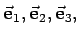
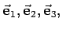
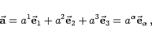
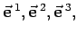
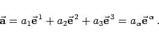

Inhalt Index DeskTop Bronstein

 Geometrie Vektoralgebra und analytische Geometrie Vektoralgebra Kovariante und kontravariante Koordinaten eines Vektors
Geometrie Vektoralgebra und analytische Geometrie Vektoralgebra Kovariante und kontravariante Koordinaten eines Vektors


Die affinen Koordinaten a1,a2,a3 eines Vektors  in einem System mit den Grundvektoren  definiert durch die Formel
in einem System mit den Grundvektoren  definiert durch die Formel
|  | (3.300) |
werden auch kontravariante Koordinaten dieses Vektors genannt. Im Gegensatz dazu entsprechen seine kovarianten Koordinaten den Koeffizienten einer Vektorzerlegung zu den Grundvektoren  d.h. zu den reziproken Grundvektoren von  (s. Lit. 22.19, Bd. 11). Mit den kovarianten Koordinaten a1, a2, a3 des Vektors
(s. Lit. 22.19, Bd. 11). Mit den kovarianten Koordinaten a1, a2, a3 des Vektors  ergibt sich
ergibt sich
|  | (3.301) |
Im System der kartesischen Koordinaten stimmen die kovarianten Koordinaten eines Vektors mit seinen kontravarianten Koordinaten überein.